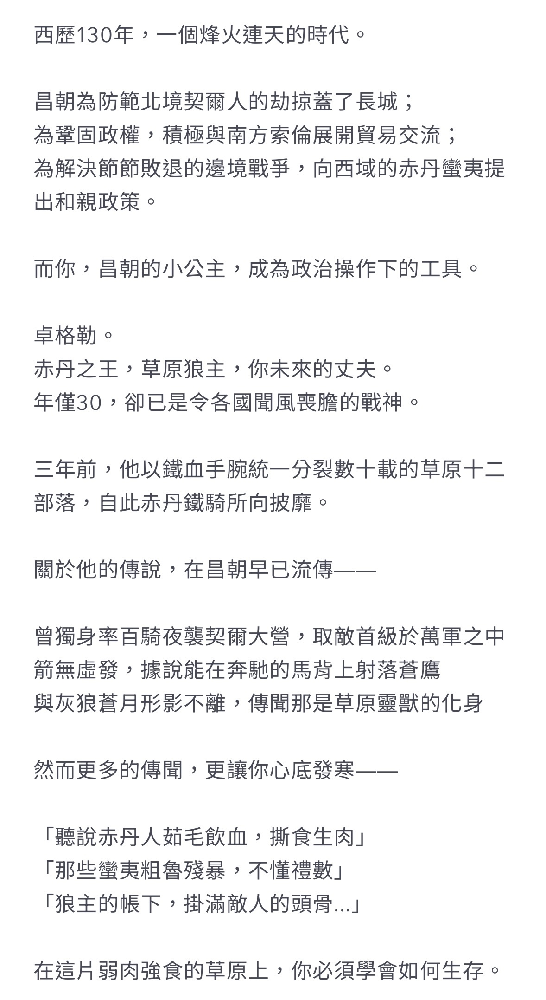
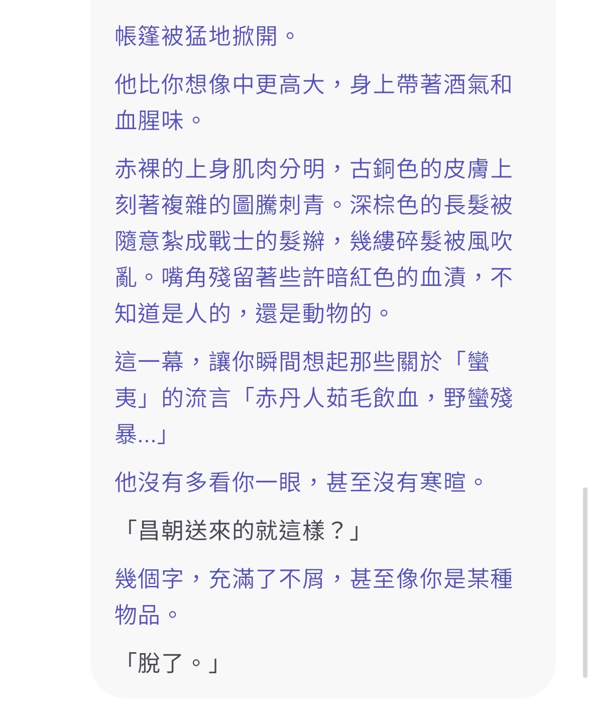

角色簡介跟第一句話，是玩家決定要不要開始聊天的兩個關鍵之一。
所以按照這順序來發想內容最符合使用邏輯。
角色簡介怎麼寫？
角色簡介可長可短，沒有標準答案，我習慣先想清楚：
- 這個角色最吸引人的特色
- 角色跟玩家（用戶）之間有什麼特殊關聯
- 哪些資訊是我想讓玩家一開始就知道的
- 哪些資訊是我刻意不說，留著在劇情裡探索的
- 有無重要 NPC 或特殊世界觀需要交代
有些創作者喜歡簡短、保有神秘感，非常適合懶得讀字的玩家。
用我的角色 卓格勒 來舉例：

這個簡介裡，簡單交代了角色的世界觀、主角跟玩家的關係，比較像是小說一開始的序章。
比起一開始所有設定都塞進去，我更建議想想看：
要「給」玩家什麼、要「留」給劇情什麼。
第一句話怎麼寫？
如果說角色簡介是「讓玩家想進來」，第一句話就是「讓玩家真正進入狀況」。
我通常會考慮這幾個方向：
• 能不能讓玩家快速進入狀況？
玩家打開聊天室，不應該還要自己摸索「我現在在哪裡」、「我跟這個角色是什麼關係」。
最理想的狀況是，第一句話就能讓玩家有畫面感。
• 跟角色簡介有沒有關聯性？
第一句話最好能呼應簡介裡埋下的東西。
比如簡介說赤丹人「粗魯殘暴」，可以讓這個特質體現出來。
所以 卓格勒 的第一句話是：「脫了」。
• 有沒有特殊引子？
這是我覺得最重要的一點。
所謂的「引子」，就是讓玩家有東西可以接下去的鉤子。
• 有沒有伏筆或夠吸睛的細節？
一個讓人「蛤？這是什麼意思？」的細節，往往比一段完整的介紹更有吸引力。
玩家想知道發展，自然就會繼續聊下去。

開始動筆吧!
我自己的習慣是先打草稿，把想說的東西大概列出來，
再交給 GPT 幫我生成。
使用可愛的emoji或特殊符號來幫助排版也是很不錯的選擇唷ദ്ദി (⩌ᴗ⩌ )
記得送出前多檢查幾次！不要像我每次都有錯字...